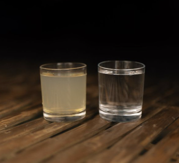
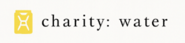

Turn $20 into clean water—
then watch it happen
Donate today and follow live GPS updates as a community-owned well springs to life.
Donate now
100 % of your donation funds clean-water projects.
16 438
lives reached
273
campus fundraisers
100 %
of gifts to projects
How your $20 becomes water
1 Give $20
2 We build
3 You track
“Seeing the well updates on my phone was the best feeling!” —Avery ’26